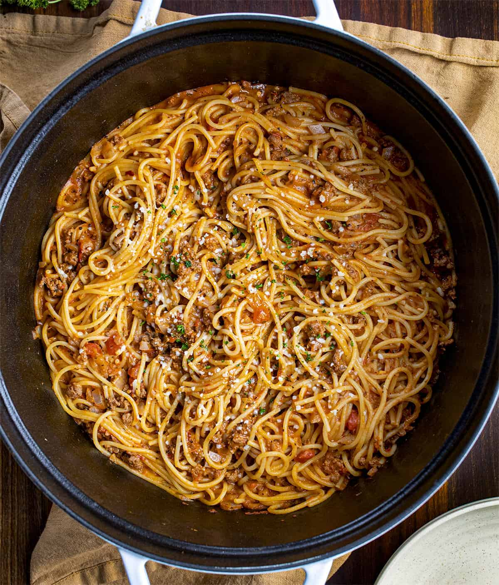

One Pot Spaghetti

Description
This is a classic of mine (as in I pulled the recipe from the internet, made it, the family loved it, and has since been a staple in my household.)
So easy to make and so delicous. My wife loves it, and my kids love it.
Heck even my cats love it. I don't call it "MY world famous spaghetti" for nothin
Ingredients
- 1lb Ground Beef
- 3 Cloves of Garlic
- Salt and Pepper
- 1 Large Onion
- 3 Cups of Sauce OR 1 Jar/Can if using store-bought
- 1 Tablespoon tomato paste
- 1 Teaspoon dried basil
- ¾ Teaspoon dried oregano
- ¼ Teaspoon dried thyme
- ¼ Cup of Sugar
- 3 Cups beef broth
- Spaghetti Noodles (As much as you need, I'm not a cop)
Steps
- Set a large pot or Dutch oven over medium-high heat.
- Throw in a finely chopped onion with some oil of choosing (I use extra virgin olive oil)
- Add the ground beef and cook until no longer pink, breaking apart and stirring as the meat cooks. Stir in the minced garlic and cook for another minute or two until fragrant.
- Add salt and pepper to taste. Add the marinara sauce, tomato paste, dried basil, dried oregano, dried thyme, sugar, and beef broth. Stir well to combine, bring to a boil, and then reduce heat to a low simmer (about medium-low).
- Lay the broken spaghetti noodles on top of the sauce, criss-crossing them and pressing them down until submerged by liquid. Do not stir at this point.
- Cover and cook, stirring every 5 minutes, until the excess liquid is absorbed and the pasta is al dente, about 15 to 20 minutes total.
- Stir well and serve immediately, topped with plenty of Parmesan cheese. (I use the fake sprinkle cheese :))
Notes
- If your sauce is still too watery by the time your pasta is done cooking, take the lid off and cook uncovered for the last few minutes. This will allow excess liquid to evaporate.
- On the other hand, if your pasta isn't cooked through by the time all of the excess liquid in the sauce has evaporated, stir in a bit more water and continue cooking until the noodles are nice and al dente.
- If you'd like to use whole wheat or gluten-free spaghetti in place of regular white pasta, just be prepared to adjust the cooking time and/or liquid, as described above.